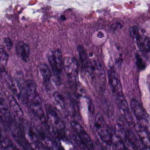
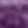
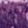
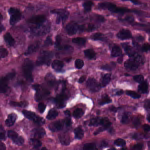
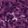

Week 8 · Learned coordinates
Learning PCA
How can a dataset choose its own coordinate system?
fit · transform · inverse_transform



Recall Week 7
A Shared Direction, Individual Scores
Component vOne direction shared by all observations.
Score zOne observation's coordinate along v.
Changing both signs preserves z v and the reconstruction.
Four centered rows · two correlated features
Correlated Features Reveal a Direction
X = [[2, 2], [−2, −2],
[1, −1], [−1, 1]]
μ = [0, 0]
C = [[10/3, 2], [2, 10/3]]
Xc = X − μ. Here Xc = X.
Sample covariance divides XcᵀXc by n − 1 = 3.
Which direction should one component keep?
v₁ = [1, 1] / √2. It captures 80% of training variance. One-component reconstruction MSE = 0.5.
A principal direction can combine features instead of following a coordinate axis.
Explore a unit direction in three dimensions
A Direction Changes the Variance
λ₃ ≤ Var(Xc v) ≤ λ₁, with ‖v‖ = 1. The extremes align with PC3 and PC1.
Centered data → covariance → maximum score variance
Maximum Variance Gives an Eigenvector
Same covariance as the four-row example.
C = XcᵀXc / (n − 1)
Var(Xc v) = vᵀ C v
Maximize vᵀCv with vᵀv = 1
⇒ C v = λ v
v is a direction; λ is the training-score sample variance along that direction.
The NumPy call students implement
Call eigh, Then Select Component Rows
C = Q diag(λ) Qᵀ
QᵀQ = I · Q stores orthonormal directions in columns.
candidate_variance, axes = np.linalg.eigh(C)Input C: (d, d), symmetric. Outputs: (d,) ascending variances and (d, d) direction columns.
(d, d)(d, k)(k, d)Keep each eigenvalue paired with its column; eigenvector signs may flip.
Eigenvalues measure the spread of scores
Explained Variance Has a Fixed Denominator
Var(zⱼ) = λⱼ
ratioⱼ = λⱼ / trace(C)
Total = 16/3 + 4/3 = 20/3.
Use all training features even for a truncated solver.
For this example, the leading direction retains 80% of training variance.
State learned once
A Fitted Object Keeps Its Coordinate System
PCA(k).fit(X_train)
- mean_
- (d,)
- components_
- (k, d)
- explained_variance_
- (k,)
- explained_variance_ratio_
- (k,)
- n_samples_
- training row count
- n_features_in_
- input width d
fitLearns from training observations and returns self.
transform / inverse_transformReuse the saved mean and directions.
Learned attributes end in an underscore.
New observations enter the coordinate system defined by training.
Implementation checkpoint 1 · covariance and eigh are your work
Eight Expressions Complete Fit
(n, d) → Xc, meancovariance_matrix
(n, d) → (d, d)(d, d) → values, axeslargest firstkeep columns, then .Ttiny negatives → 0all squared centered entries / (n − 1)selected / totalThe teacher supplies validation, solver routing, image SVD and state assignment.
Your small-data fit explicitly builds covariance and extracts eigenvectors with NumPy.
Implementation checkpoint 2
Two Methods Reuse Week 7
Use your existing project.
Z = (X − μ)Vᵀ
(m, d) → (m, k)Use your existing reconstruct.
X̂ = ZV + μ
(m, k) → (m, d)Both methods use the same saved mean and component rows.
One learned origin
Validation Uses the Training Origin
Training: [0, 2]Saved mean = 1.
Validation: [4, 6]Subtract the saved training mean.
Scores = [3, 5]
What if validation is centered again?
The scores become [−1, 1]. The shift disappears because the coordinate origin changed.
Changing the batch does not change the fitted model.
WDBC · 30 named features
Thirty Features, Three Coordinates
Drag to rotate. Teal: benign. Rust: malignant.
Three coordinates show one view of a 30-feature dataset.
Signed coefficients in standardized feature space
A Component Combines Named Features
Read combinations of related features, with the chosen sign convention in mind.
Kather 2016 · eight tissue classes
The Same PCA API Fits Images

150 × 150 RGB

28 × 28 RGB
flatten, then /255The teacher's SVD helper supplies directions and variances. PCA receives no labels.
Fit once on training pixels, then reuse the same PCA object.
One learned direction at a time
Image Components Have Positive and Negative Weights
blue = negative · white = 0 · red = positive
σⱼ = √λⱼ. RGB images clip only for display. Signed maps share one scale.
A component describes a coordinated change across pixel channels.
One training fit · eight fixed validation examples
A Learned Basis Reconstructs New Images
150 × 150
28 × 28
More directions preserve more of the measured input, with the same fitted basis.
Working code and evidence you can explain
Verify, Interpret, and Connect to Week 9
One cumulative packagePCA plus all Week 1–7 functions and tests.
Reproducible resultsState summary, 3D scores, named coefficients, components and reconstructions.
Open the student worksheetWhich variance belongs in the denominator?
Total variance across all training features.
Can a component and its scores both flip?
Yes. Their product and reconstruction stay unchanged.
What does a new batch change?
Its scores. The fitted mean and directions stay fixed.
Do three PCs prove good classification?
No. Week 9 evaluates a classifier on held-out validation data.
Week 9 learns class probabilities from these PCA scores.